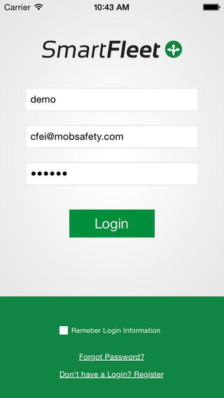

Portfolio
-
Conversations
Infobip SRO August 2020 - May 2023
Devices: iPhone
TODO
Languages: Swift, Python, Bash
Works and used technologies:
- TODO
-
boon and boon.PLANET
Wirecard SRO June 2019 - August 2020
Devices: iPhone, iWatch
boon.PLANET is a bank on the smartphone. You can do such banking actions as payments, transfers, checking balances etc. wherever you are, quickly and securely, right from your device.
Languages: Swift, Bash, Ruby
Works and used technologies:
- Implemented new features for Boon Family projects
- Updated and supported CI/CD scripts using Jenkins, Fastlane, Ruby, and Bash
- Addressed bug fixes
- Performed code refactoring
- Conducted UI and unit testing
-
Invitly
Invitly SAS April 2018 - May 2019
Devices: iPhone 5-X
The app to accept invites to meet professionals for a drink or meal or to create such invitations. Using LinkedIn account data it help to find interesting events or persons. Also user can use extended account for more flexible setting of events.
Languages: Swift, Bash (to use Swagger Code Generator)
Works and used technologies:
- Integrated with LinkedIn and Google API, Swagger (API) and Crashlytics
- Implemented internal chat with different types of messages
- Developed a lot of custom controls with animation and effects
- Other features (the app was created from base project and around 80% of useful features were added by my team)

-
Curogram
Curogram Inc June 2017 - April 2018
Devices: iPhone 4s-X
Curogram is an instant messenger service for patients and health care providers to share sensitive medical information
Languages: Swift
Works and used technologies:
- Developed and added an extension for rendering svg files inside the application at runtime with caching of results
- Created from scratch a flexible chat with different types of messages
- Monitored application productivity. Optimized the code of various algorithms to reduce resource consumption
- Improved the User Interface in accordance with the requirements of the designer and specifications
App for patients
App for providers
-
Donut Logs
Donut Logs Inc May 2016 - May 2017
Devices: iPhone 4-7, iPad
The app is the modern management assistant for QSR Stores. It shows when critical store operation tasks are complete or can alert when the task becomes overdue. App was designed to support a top donut chain, but can easily be configured for any other QSR.
Languages:ObjC, Swift
Works and used technologies:
- Integrated to application two types of subscriptions: IAP and PayPal payments. Resolved issues with payments
- Added push notifications for managing tasks, sending messages and tasks to employees, and reporting problems.
- Added Localization
- CoreData. App uses it to store all data offline and syncs all the changes in the database when a user gets online (ex. if he goes to place without Internet or local server). It contains feature to solve collisions when a user comes back to online or if several users make changes in the same task.
- Implemented Network using Rest API for common data and Sockets to chat and urgent changes in tasks (because APNS sometimes delays the data processing)
-
Mneme Artikel
Startup May 2016
Devices: iPhone 4-6s
This Application helps everybody who studies German to resolve issues dealing with articles. The app has a dictionary containing thousands of German nouns categorized by subject: 'At work', ‘Travel’, 'Animals', 'Accommodation', 'Nature' and much more.
Languages: Swift
Works and used technologies:
- Created method for learning of articles
- Added localization to update UI immediately without app re-launching
- Used IAP to buy premium account
- Speed: the application was finished and reviewed on Appstore during three weeks
-
TheMacU
SwansonDigital LLC August 2015 - May 2016
Devices: iPad, OSX
The application allows to increase skills and experience working with different Apple Inc. products (such as iPhoto, iCloud, iBook etc.). It contains courses describing how to work efficiently with OSX, office software tools, photo applications, design tools and many other.
Languages: ObjC
Works and used technologies:
- Video: play video stream from Internet, caching video on device, customizing player.
- AWS: management tool to create and upload new courses, downloading data in app, caching etc
- IAP and subscriptions for different platform, synchronization and validation of receipts
- iCloud: synchronize progress, purchases between platforms
version for iOS
version for OSX

-
Tipsi
Tipsi Inc August 2014 - August 2015
Devices: iPhone 4 - 5s
It's an application about wine and food. App contains thousands of various wine collections, including reviews from well-known sommelier, ranks of the noticeable rating companies in wine industry, information about wine origins, buyer review and many other features. A user can find a nearby restaurant with the desired wine, order a wine in the online shop with door to door delivery, add their personal rating and review and share it with thousands of other users. If the wine is missing in the database, he can send a request of a desired wine to Tipsi database.
Languages: ObjC
Works and used technologies:
- Text and image recognizing. Using Vuforia to recognise wine labels. After that app uses text recognising lib (TesseractOCR) to select year of wine if found label are same for different years
- Integrated with different third side services like Foursquare and internet wine shops (web service api and Oauth). Integrated with social networks
- Analytics (Flurry and Crashlytics)
-
EDMX
Startup August 2014
Devices: iPhone 4 - 5s
It’s an application that provides information about huge number of various musical events, festivals and concerts. It allows to find additional info about singers, bands and places where the events will run. User can find information of the event he is interested in and all additional info about it. He can listen to music excerpts; communicate to the other visitors of the chosen event. There is also reminder function on the upcoming events.
Languages: ObjC
Works and used technologies:
- High speed development, pair programming (we had only a few weeks before publishing on AppStore)
- Custom cache to reduce loading of backend and show data for user asap
-
Smart Fleet
Mobsafety Inc September 2013 - August 2014
Devices: iPhone 4 - 5s
It is an application for transport companies allowing to track the delivery of goods, different documentary creation and control the rules of transportation as well as optimization of vehicles moving, It also allows to transfer documents, messages and show variety of additional information. Very useful for any transportation agency to get their clients proper updates on the delivery status and safety.
Languages: ObjC, Bash
Works and used technologies:
- GPS location. Getting coordinates, filtering wrong values (for tunnels, sky scrabs etc)
- Management feature. Showing new messages from dispatcher in chat or using APNS if app was closed. Creating of reports for every vehicles, sending of routes directly on vehicle device with all needed documentation
- System to build enterprise version of the app on remote build server (bamboo, Bash)
 -
Ranger Browser
Mobsafety Inc Marсh 2013 - September 2013
Devices: iPhone 4 - 5s, iPad
It’s a secure browser which allows to filter forbidden content, remote monitoring of the visited web pages for the governmental, educational and social institutions. It replaces standard browser Safari and allows to control the content allowed to display in the browser. Similar to parental control in many ways.
Languages: ObjC, C, Bash, JS
Works and used technologies:
- MDM – mobile device management. Used to install remotely application, remove Safari, set restrictions and remote control
- Adult content blocking. White and black lists, JS injections
- System to build enterprise version of the app on remote build server (bamboo, Bash)

-
Humm Together
Oyster Labs October 2012 - Marсh 2013
Devices: iPhone 4 – 5s
It’s a multi-player game. The main idea is that one player sings the melody and the other player has to recognize it according to the give multiple answers. The game includes a lot of visual and sound effects, social interaction and communication between the users.
Languages: ObjC, C
Works and used technologies:
- Sound analysis - build the sound spectrum (FFT, create video, filter and mask sounds to change the timbre/quality)
- High level of client-server optimization (video / audio data compression, caching, etc.)
- Pixel Perfect UI - all controls, fonts, animations and sounds effects were absolutely equal to ui-design and specification
- Integrated with social networks
-
PadCMS / Rue89
Adyax July 2012 - October 2012
Devices: iPad
PadCMS is an open source project for periodical publishing of multimedia content via AppStore. It’s a client-server solution allowing to show almost any type of content for the ipad viewers. Client side contains two parts – the core and the UI wrapper. From one side it ensures that the capabilities of the system are used efficiently and the same time allows to quickly set up the whole tool for the special needs of every customer. It does not require any changes into the core code, which decreases time and allows to deliver necessary changes as quickly as possible.
Languages: ObjC, C, Bash
Works and used technologies:
- Tool to parse pdf file. App was created like Debian service, to convert pdf magazines to special format. (C, Bash)
- Core Lib – added several interactive features (ObjC)
- Client wrapper – created wrappers for different publishers to add custom features (ObjC)

-
Pixelstick
Plum Amazing Inc September 2010 - July 2012